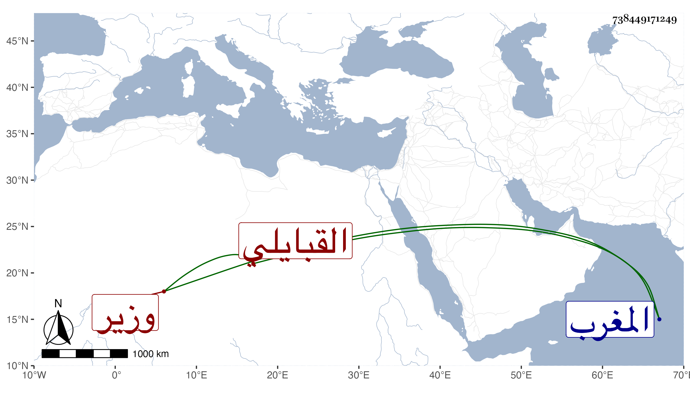

0902Sakhawi.DawLamic.ITO20230111-ara1.EIS1600.738449171249
Biography ID: 738449171249
135
أحمد بن علي أبو العباس بن الرئيس أبي الحسن بن الشيخ القبايلي . وزير صاحب المغرب كان سلفه من خواص بني عبد المؤمن وقتل أبوه أبو الحسن سنة أربع وسبعين وسبعمائة بيد يعقوب بن عبد الحق المريني وكان كاتبا مطيقا ونشأ ولده فأتقن الكتابة وباشر الأعمال السلطانية وتميز في معرفة الحساب وصناعة الديوان فلما ظهر السلطان أبو الحسن امتحن ثم خدمه وناصحه وقام بعده بولاية ولده أبي فارس ثم عقد لأخيه أبي عامر ثم ببيعة أخيه أبي سعيد ثم أوقع أهل الشر بينهما فأرسل إليه وإلى ابنه عبد الرحمن فسجنهما ثم ذبحهما في شوال سنة ثلاث . ذكره شيخنا في أنبائه .
